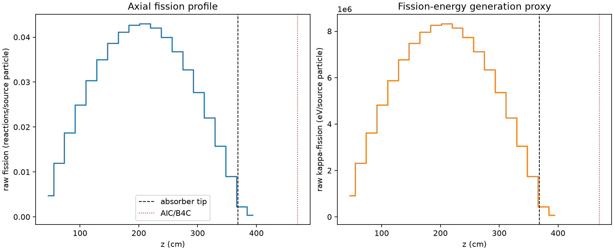
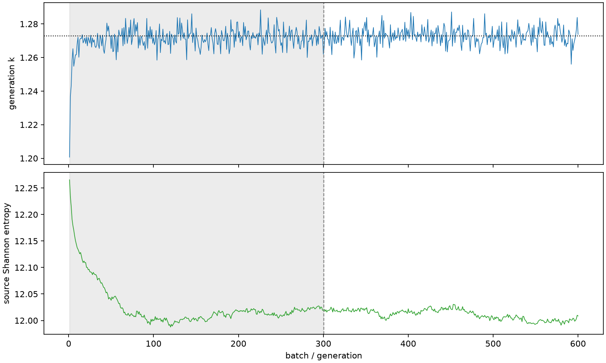

| field | value |
|---|---|
| experiment | V2-STAGE_256_OGRENCI_04-0025 |
| k | 1.2727973392977676 |
| MC standard error | 0.00018779124629180575 |
| seconds | 1022.8626133729995 |
| acceptance | not_assessed |
| convergence | review_required |
Completed is output integrity only; physical and statistical review required. Zero tallies do not prove zero production or zero uncertainty.
| diagnostic | value |
|---|---|
| geometric fuel voxels | 5280 |
| zero fission tally voxels | 0 |
| low signal fuel voxels | 0 |
| low signal fission share | 0.0 |
| low signal kappa share | 0.0 |
| important fission share | 0.9500411439412055 |
| previous filter included | 5280 |
| duration estimate s | 1562.5173488400023 |
| actual minus estimate s | -539.6547354670029 |
| fission relative MC error | statistics |
|---|---|
| all_geometric_fuel | {"voxels": 5280, "positive_mean_voxels": 5280, "zero_mean_voxels": 0, "undefined_relative_error_voxels": 0, "median": 0.009778942703986415, "p95": 0.038872298988984415, "maximum": 0.09328636016399827} |
| low_signal | {"voxels": 0, "positive_mean_voxels": 0, "zero_mean_voxels": 0, "undefined_relative_error_voxels": 0, "median": null, "p95": null, "maximum": null} |
| important_95pct | {"voxels": 4008, "positive_mean_voxels": 4008, "zero_mean_voxels": 0, "undefined_relative_error_voxels": 0, "median": 0.008934215578569632, "p95": 0.013212666946143516, "maximum": 0.016189294630837084} |
| outside_previous_filter | {"voxels": 0, "positive_mean_voxels": 0, "zero_mean_voxels": 0, "undefined_relative_error_voxels": 0, "median": null, "p95": null, "maximum": null} |
| kappa_fission relative MC error | statistics |
|---|---|
| all_geometric_fuel | {"voxels": 5280, "positive_mean_voxels": 5280, "zero_mean_voxels": 0, "undefined_relative_error_voxels": 0, "median": 0.009768606243560431, "p95": 0.0388300137044994, "maximum": 0.09314673429931465} |
| low_signal | {"voxels": 0, "positive_mean_voxels": 0, "zero_mean_voxels": 0, "undefined_relative_error_voxels": 0, "median": null, "p95": null, "maximum": null} |
| important_95pct | {"voxels": 4008, "positive_mean_voxels": 4008, "zero_mean_voxels": 0, "undefined_relative_error_voxels": 0, "median": 0.008923946684753199, "p95": 0.013197836865688962, "maximum": 0.016170720569481756} |
| outside_previous_filter | {"voxels": 0, "positive_mean_voxels": 0, "zero_mean_voxels": 0, "undefined_relative_error_voxels": 0, "median": null, "p95": null, "maximum": null} |
| axial bin | fission share | kappa-fission share |
|---|---|---|
| 1 | 0.009041537421230024 | 0.009041946487305023 |
| 2 | 0.022930292999442343 | 0.022930319214426627 |
| 3 | 0.036019561613656305 | 0.036019402503860695 |
| 4 | 0.04796546858534125 | 0.047965421661263316 |
| 5 | 0.058368457369613595 | 0.058368569963896985 |
| 6 | 0.06735745246212813 | 0.0673572741632357 |
| 7 | 0.0743755735396489 | 0.07437520918173772 |
| 8 | 0.07916014178093161 | 0.07915998480359206 |
| 9 | 0.08213990437609683 | 0.08213980958790822 |
| 10 | 0.08262551655059738 | 0.08262535704713173 |
| 11 | 0.08093201553258479 | 0.08093184065133659 |
| 12 | 0.07686472082758945 | 0.07686460081554135 |
| 13 | 0.07082295819507624 | 0.07082275418029715 |
| 14 | 0.06298710039674656 | 0.06298693875074869 |
| 15 | 0.053352391137488284 | 0.05335228071988279 |
| 16 | 0.042381429700046026 | 0.042381380442058816 |
| 17 | 0.030343451250461572 | 0.03034340341439812 |
| 18 | 0.017277753176871562 | 0.017277738767974834 |
| 19 | 0.004292106403890054 | 0.004293259312731492 |
| 20 | 0.0007621666805588234 | 0.0007625083306721936 |
Histories include the inactive-to-active transition at batch 300. kappa-fission approximates fission energy production, not total heat deposition.

